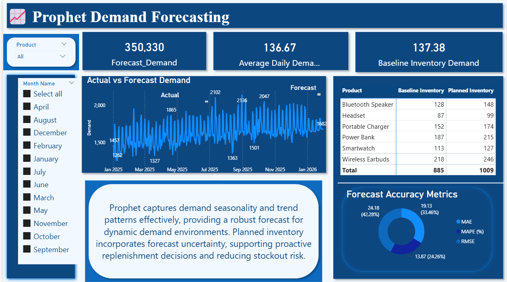
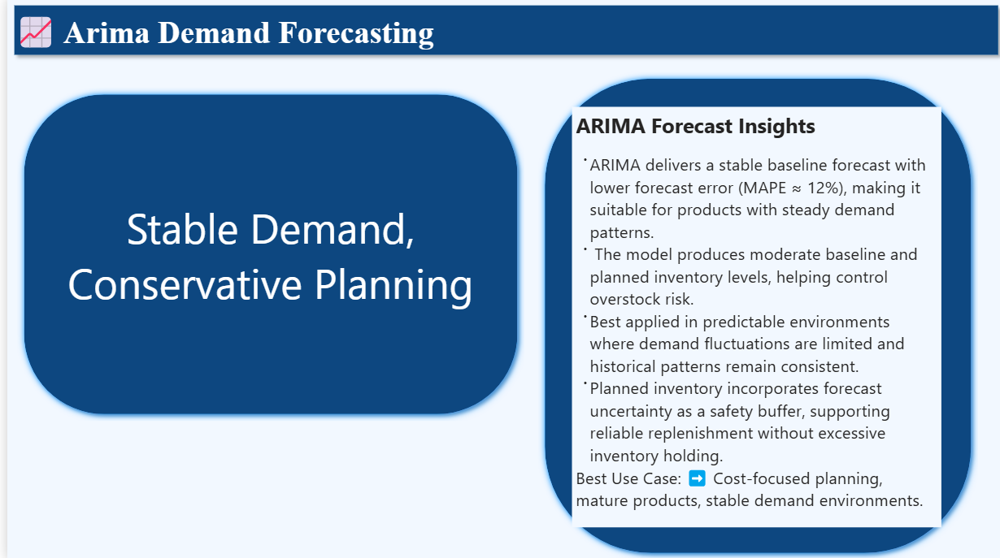

Project Overview
Retail operations often suffer revenue loss due to poor demand planning, late reorders, and unexpected stockouts. This project builds a demand forecasting and inventory intelligence system using historical stock movements, sales transactions, inventory levels, and purchase records. The dashboard predicts future demand using ARIMA and Prophet, then connects those forecasts to inventory decisions such as reorder alerts and revenue leak detection.
Methodology
The system follows a data-driven pipeline aligned with your dashboard logic:
- Integrated stock movements, sales items, inventory, products, and purchase tables.
- Engineered demand from sales quantities and stock changes.
- Handled missing demand using forward fill and rolling smoothing.
- Built ARIMA models for short-term statistical forecasting.
- Applied Prophet to capture trend and seasonality patterns.
- Generated trend charts, stockout timelines, and reorder alert signals.
- Estimated lost revenue caused by unavailable stock (revenue leak analysis).
Outcome
The final dashboard transforms raw operational data into forward-looking intelligence, enabling proactive replenishment, reduced stockout risk, and better revenue protection across products and stores.
Visual Highlights




Key Insights
📉 Demand Volatility is Driving Hidden Stockouts
Forecasting shows clear demand spikes that are not reflected in current inventory planning, leading to preventable stockout events.
- Demand patterns are seasonal and not captured in static reorder rules.
- Stockouts consistently occur after demand acceleration phases.
- Revenue loss is driven by inability to anticipate demand shifts.
Decision Impact: Replace static replenishment with forecast-driven inventory planning.
📈 Forecast Models Reveal Two Demand Systems
ARIMA and Prophet expose fundamentally different product behaviors — stable vs seasonal demand patterns.
- ARIMA products show predictable consumption cycles.
- Prophet products show strong seasonality and spikes.
- Using one model for all products creates inventory imbalance.
Decision Impact: Segment products by demand behavior and assign forecasting logic accordingly.
💰 Revenue Loss is Preventable, Not Random
Stockouts are not isolated incidents — they follow repeatable patterns linked to forecastable demand increases.
- Losses occur after predictable demand surges.
- Inventory replenishment lags behind demand signals.
- Most revenue leakage is operational, not market-driven.
Decision Impact: Introduce proactive replenishment triggers based on forecast thresholds.
📦 Inventory Planning is Reacting Too Late
Current replenishment systems respond after stock depletion rather than before demand peaks occur.
- Reorder decisions are lagging indicators.
- No forward-looking inventory buffer strategy exists.
- Stock decisions are disconnected from demand forecasting outputs.
Decision Impact: Shift from reactive ordering to predictive stock control system.
Recommendations
🧠 Implement Forecast-Driven Replenishment System
Integrate ARIMA and Prophet outputs directly into inventory planning to trigger reorders before demand peaks occur.
📊 Segment Products by Demand Behavior
Separate SKUs into stable and seasonal categories and assign different forecasting models to each group.
⏱ Introduce Predictive Reorder Triggers
Replace static reorder points with dynamic thresholds based on forecasted demand curves.
🛡 Build Revenue Protection Layer
Add safety stock rules for high-impact products to prevent stockouts during forecasted demand surges.
This project shows how forecasting, inventory data, and revenue logic combine into a single intelligence system that helps businesses prevent loss before it happens instead of reacting after.